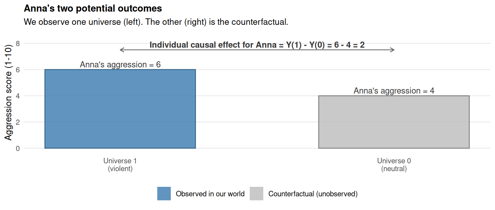
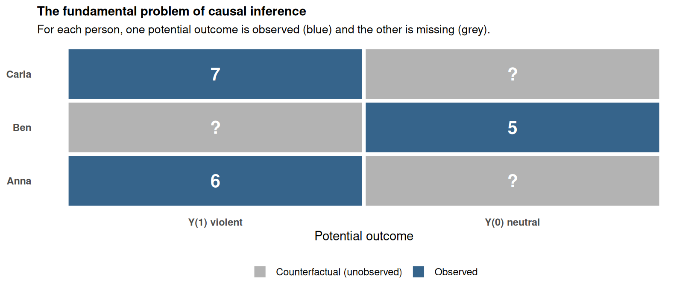

40 The potential outcomes framework
Chapter 39 ended with a problem. We want to know whether the violent video game caused the higher aggression scores we observed in vgames_study, but the data alone are compatible with multiple causal stories. To make progress, we need a more formal way to talk about what we mean by “cause,” precise enough that the framework will tell us exactly what we can and cannot learn from a given dataset.
This chapter develops that framework. It is called the potential outcomes framework, or the Rubin causal model, after Donald Rubin who developed it in a series of papers beginning in the 1970s (Rubin, 1974). The framework is built around two simple but powerful ideas: that every person has two potential outcomes (one for each treatment they might receive), and that we can only ever observe one of them. The chapter develops these ideas step by step, applies them to vgames_study, and introduces the average treatment effect as the quantity we will spend the rest of Section 6 learning to estimate.
The math in this chapter is light. The concepts are heavy. Take it slowly.
40.1 The two parallel universes
Let’s start with one participant from vgames_study. Call her Anna. Anna walks into the lab. The experimenter assigns her to play the violent game for fifteen minutes. Afterwards, Anna fills out the aggression questionnaire and scores 6 out of 10.
Did playing the violent game cause Anna’s aggression to be 6? To answer, we need to know what Anna’s aggression score would have been if she had played the neutral game instead. There are three possibilities:
- Maybe it would have been 6 too. Then the violent game had no effect on Anna; she would have scored 6 regardless of which game she played, and the game was causally irrelevant.
- Maybe it would have been 4. Then the violent game raised her aggression by 2 points. The game had a real causal effect on her of +2.
- Maybe it would have been 8. Then the violent game actually calmed her down, lowering her aggression by 2 points. The game had a causal effect of −2.
The data we collected does not tell us which of these is true. We see Anna scored 6 after the violent game. We do not see what she would have scored after the neutral game. There is no version of the experiment where Anna simultaneously did and did not play the violent game.
The potential outcomes framework imagines this by means of the two parallel universes thought experiment. When Anna walks into the lab, the universe (in our minds) splits in two:
- Universe 1. Anna is assigned to play the violent game. Her aggression score in this universe is 6.
- Universe 0. Anna is assigned to play the neutral game. Her aggression score in this universe is, say, 4.
In Universe 1, Anna’s score is 6. In Universe 0, Anna’s score is 4. The difference, 6 − 4 = 2, is the individual causal effect of the violent game for Anna specifically. It is exactly what we want to know. And in this thought experiment, where both universes are visible, we can compute it directly.
The problem is that we live in one of these universes, not both. Anna actually played the violent game. We saw her score of 6. The value of her score in the unrealized universe (the neutral one) is something we have to infer somehow if we want to make a causal claim.
The blue bar is what we observed in our world. The grey bar is the counterfactual: it is what would have happened in the universe we did not see. The difference between them (the height of the arrow at the top of the figure) is the individual causal effect for Anna. The framework’s central problem is that we observe only one of the two bars per person, and so the difference is never directly computable.
40.2 The notation
Now we attach formal notation to this picture. The notation looks fancy but it just labels the two universes.
For each participant i, we define two potential outcomes:
- Yi(1) = the outcome we would observe if person i were assigned to the treatment (the violent game). This is the value in Universe 1.
- Yi(0) = the outcome we would observe if person i were assigned to the control (the neutral game). This is the value in Universe 0.
For Anna, Y(1) = 6 (her aggression score in the universe where she played the violent game) and Y(0) = 4 (her aggression score in the universe where she played the neutral game).
The individual causal effect for person i is the difference between these two potential outcomes:
\[ \tau_i = Y_i(1) - Y_i(0) \]
For Anna, \(\tau_{\text{Anna}} = 6 - 4 = 2\). The violent game raised her aggression score by 2 points relative to what it would have been under the neutral game.
The word “potential” is the key word here. Y(1) and Y(0) are quantities that would be observed under each treatment. They are well-defined regardless of which treatment the person actually receives. The treatment Anna actually got determines which of Y(1) and Y(0) we observe; the other one remains a potential outcome that was never realized for her specifically.
40.3 A small worked example
Consider a tiny study with three participants: Anna, Ben, and Carla. Imagine for a moment that we have x-ray vision and can see both potential outcomes for each person:
| Person | Y(1) (violent) | Y(0) (neutral) | Individual effect Y(1) − Y(0) |
|---|---|---|---|
| Anna | 6 | 4 | +2 |
| Ben | 5 | 5 | 0 |
| Carla | 7 | 3 | +4 |
In this thought experiment:
- The violent game increased Anna’s aggression by 2 points.
- The violent game had no effect on Ben at all.
- The violent game increased Carla’s aggression by 4 points.
Notice that the causal effect varies across people. Anna and Carla react differently to the same intervention. Ben does not react at all. This is realistic; not everyone responds to a treatment in the same way, and the potential outcomes framework explicitly accommodates this. Each person has their own pair of potential outcomes, and the individual effect is computed per person.
If we could see this whole table, causal inference would be trivial. We would just average the individual effects to get the average treatment effect for these three people: (2 + 0 + 4)/3 = +2 points of aggression caused by the violent game on average.
But of course, we cannot see this table. In the actual experiment, each person plays only one of the two games. We see the column corresponding to the game they actually played; the other column is missing.
40.4 The fundamental problem of causal inference
Now imagine the actual experiment. The researcher assigns Anna to play the violent game, Ben to play the neutral game, and Carla to play the violent game. The data we observe look like this:
| Person | Played | Y(1) (violent) | Y(0) (neutral) |
|---|---|---|---|
| Anna | violent | 6 | ? |
| Ben | neutral | ? | 5 |
| Carla | violent | 7 | ? |
For each person, one of the two potential outcomes is observed (the one corresponding to the game they actually played) and the other is missing (the counterfactual). We see Anna’s Y(1) but not her Y(0). We see Ben’s Y(0) but not his Y(1). We see Carla’s Y(1) but not her Y(0).
This missing-data structure is what Rubin called the fundamental problem of causal inference:
For any individual person, we can observe at most one of their potential outcomes. The other one is forever unobservable.
The word “fundamental” is doing real work here. The problem is not that we have a small sample, or that our measurements are noisy, or that we lacked the budget for a bigger study. With a million participants, we would still see only one of the two potential outcomes per person. The “?”s would multiply, but they would still be there. The problem is structural: it follows from the logic of what a causal claim is. It cannot be solved by collecting more data.

The blue cells are what the data show us. The grey cells are what we wish we knew but cannot. The fundamental problem is that exactly half of the cells in this table are missing, by the logic of how causal questions work.
40.5 From individuals to averages: the ATE
We cannot estimate individual causal effects because we cannot observe individual counterfactuals. This is a hard wall, and no amount of data collection or cleverer statistics will get us past it for any specific person.
But we can sometimes estimate averages. Even though we cannot see Anna’s Y(0), we can see Ben’s Y(0). Even though we cannot see Ben’s Y(1), we can see Anna’s and Carla’s. If we average the Y(1) values across the people who actually got the treatment, and we average the Y(0) values across the people who got the control, we might be able to estimate the average difference between the two universes across the population.
This averaged quantity is called the average treatment effect, or ATE:
\[ \text{ATE} = E[Y(1) - Y(0)] = E[Y(1)] - E[Y(0)] \]
In words: the ATE is the mean of Y(1) across the population minus the mean of Y(0) across the population. Equivalently, it is the average across persons of Y(1) − Y(0).
For our three-person example, where we have x-ray vision:
- Mean of Y(1) across Anna, Ben, Carla = (6 + 5 + 7) / 3 = 6
- Mean of Y(0) across Anna, Ben, Carla = (4 + 5 + 3) / 3 = 4
- ATE = 6 − 4 = +2
The ATE tells us that on average, across this small population, the violent game raises aggression by 2 points. We cannot say which individual gets a 0-point boost (Ben) and which gets a 4-point boost (Carla). But we can say that on average, the boost is 2 points.
For most practical research questions, the ATE is what we want. Drug trials want the average effect of the drug across patients; education research wants the average effect of a curriculum across classrooms; policy research wants the average effect of an intervention across communities. We give up on individual effects (which the fundamental problem makes inaccessible) and aim for the achievable average instead.
40.6 Why averaging helps
Here is the key insight that makes causal inference possible at all. Even though we cannot see the full column for Y(1) or for Y(0), we might be able to estimate the averages of those columns by using different people for each estimate.
Specifically: if we have one group of people who actually played the violent game, we can use their observed aggression scores to estimate \(E[Y(1)]\). If we have another group of people who actually played the neutral game, we can use their observed scores to estimate \(E[Y(0)]\). The difference between these two group means is a candidate estimate of the ATE.
This is exactly the comparison we have been computing throughout the book. The two-group mean comparison in Chapter 14 (mean as a model), the t-test in Chapter 22, the regression coefficient on condition in Chapter 17, all of these are computing the same quantity: the difference between the mean of Y in the treatment group and the mean of Y in the control group. We will call this quantity the observed group mean difference:
\[ \widehat{\Delta} = \bar{Y}_{\text{treatment group}} - \bar{Y}_{\text{control group}} \]
The question is whether \(\widehat{\Delta}\), which we can compute from observed data, equals the ATE, which we want to know. The answer is sometimes yes, sometimes no, and the difference between the two is what defines the rest of Section 6.
The key issue is which people end up in the treatment group and which people end up in the control group. If the two groups are exchangeable with respect to potential outcomes (meaning, the average Y(1) among the people in the treatment group is the same as the average Y(1) among the people in the control group, and the same for Y(0)), then \(\widehat{\Delta}\) equals the ATE and we have a clean causal estimate. If the two groups are not exchangeable, then \(\widehat{\Delta}\) mixes the ATE with pre-existing differences between the groups and is not a clean causal estimate.
Exchangeability does not happen by accident. It is purchased by design. The cleanest way to purchase it is random assignment, the topic of Chapter 41. When randomization is not available, we can sometimes purchase exchangeability by careful adjustment for the right covariates, the topic of Chapters 42 to 44.
40.7 Connection to what you have done already
Recall that in Chapter 17 you ran a regression on vgames_study to compare aggression in the violent and neutral conditions. The output included a coefficient of approximately 1.35 with a 95% confidence interval that excluded zero. In the potential outcomes framework, that coefficient is the observed group mean difference \(\widehat{\Delta}\). We computed it on the data we had. The conceptual question is whether \(\widehat{\Delta}\) in vgames_study estimates the ATE of playing the violent game on aggression.
The answer depends entirely on how participants were assigned to conditions. If the assignment was random (as we have implicitly assumed in earlier chapters), then yes: \(\widehat{\Delta}\) estimates the ATE, and the 1.35-point coefficient is a causal estimate. If the assignment was not random, then \(\widehat{\Delta}\) is just the observed group mean difference, and it may or may not equal the ATE depending on how the groups happened to differ at baseline.
This is the conceptual move you should sit with for a moment. The lm() output is the same number either way. The math is the same. What changes is whether that number is the ATE (a causal quantity) or just a descriptive difference (not a causal quantity). The framework for telling these two apart is what the rest of Section 6 will build. Chapter 41 explains why random assignment delivers the ATE for free. Chapters 42 to 44 explain what we can do when random assignment is not available.
40.8 Summary
The potential outcomes framework gives us:
- A formal definition of what it means for X to cause Y in any specific person: the difference between Y(1) and Y(0) for that person.
- A formal statement of why causal claims are hard: the fundamental problem of causal inference says we never see both potential outcomes for any individual.
- A workable target: the average treatment effect (ATE), the average difference between Y(1) and Y(0) across the population, which can sometimes be estimated from observed group means.
- A clear bridge to standard statistical tools: the observed group mean difference (a t-test, a regression coefficient on a treatment dummy) is a candidate estimator of the ATE, and the question of whether it actually estimates the ATE depends on the design of the study.
This framework is more than a thinking aid. It is the language we will use throughout Section 6 to specify exactly what a causal claim is, what it requires, and when we can and cannot make one. Chapter 41 picks up from here and develops randomization as the cleanest path from the observed group mean difference to the ATE.
40.9 Check your understanding
1. What is a potential outcome in the Rubin causal model framework?
2. What does the fundamental problem of causal inference state?
3. What is the average treatment effect (ATE)?
4. What is the relationship between the observed group mean difference and the ATE?
5. How does the regression coefficient from lm(aggression ~ condition) in Chapter 17 relate to the potential outcomes framework introduced in this chapter?
40.10 References
Holland, P. W. (1986). Statistics and causal inference. Journal of the American Statistical Association, 81(396), 945-960. https://doi.org/10.2307/2289064
Imbens, G. W., & Rubin, D. B. (2015). Causal inference for statistics, social, and biomedical sciences: An introduction. Cambridge University Press. https://doi.org/10.1017/CBO9781139025751
Rubin, D. B. (1974). Estimating causal effects of treatments in randomized and nonrandomized studies. Journal of Educational Psychology, 66(5), 688-701. https://doi.org/10.1037/h0037350